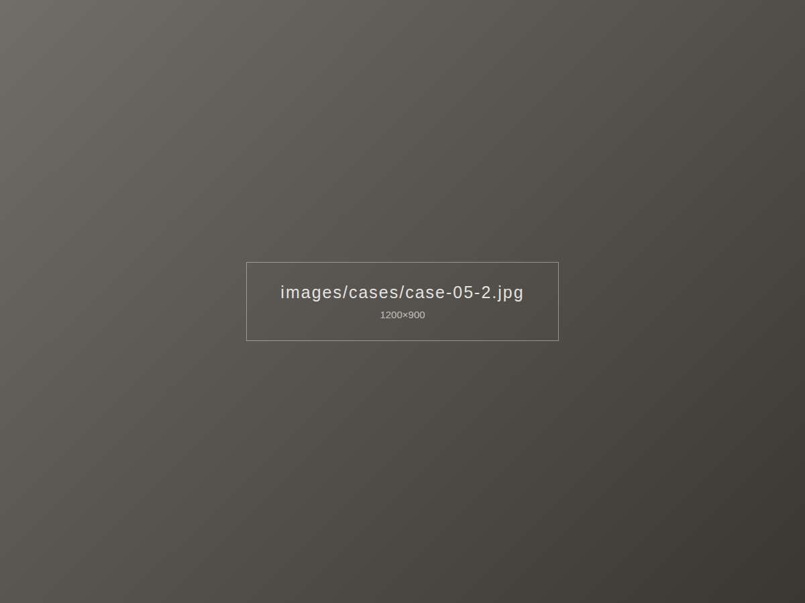
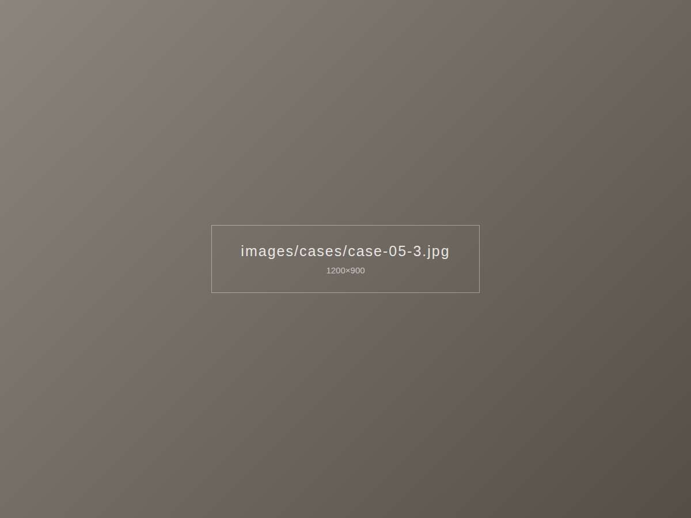

이런 고민이 있었어요
층고가 5m에 가까운 복층 거실이라 위쪽 창의 커튼을 손으로 여닫을 수가 없었습니다. 여름에는 위층 창으로 들어오는 열기도 고민이었어요.



이렇게 해결했어요
천장에 전동 레일을 설치하고 긴 린넨 커튼을 달아, 리모컨으로 한 번에 여닫을 수 있도록 했습니다. 실측 때 전원 위치를 먼저 확인해 배선이 드러나지 않도록 시공했습니다.
시공 포인트
- 모터 위치와 전원을 실측 단계에서 확정
- 긴 기장에 맞춰 무게를 견디는 레일 선택
- 예약 기능으로 아침에 자동으로 열리게 설정
비슷한 집이라면
경기 고양시 일산 지역, 비슷한 구조의 집이라면 이 사례 사진을 보여주시며 상담받으셔도 좋아요.
전동 커튼 · 블라인드 자세히 보기 · 일산 시공 안내